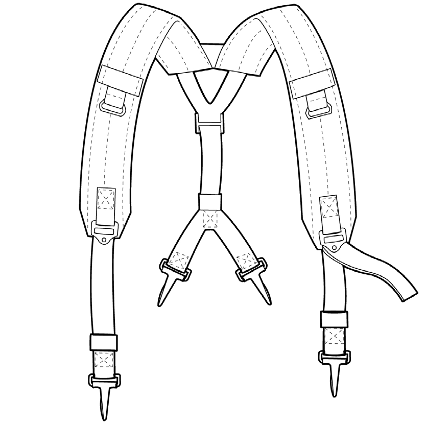
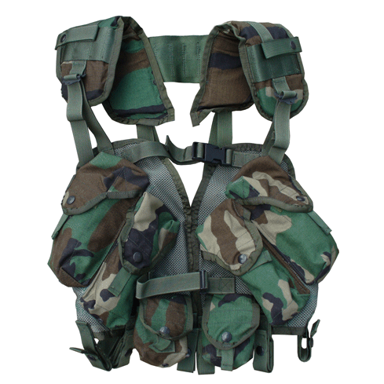

Alice is an early modular setup that uses small metal clips called slide keepers, which actually were a carry over from the M1956 system, but most call them "Alice Clips" and they are now synonymous with the alice system. Like the earlier M1956 and M1967 load bearing equipment, these small but durable clips are the glue that makes the entire system work, without them the system will not work, and if they are not fitted correctly, can be uncomfortable, which is why I prefer the LBV-88E vest but sometimes things break and you have to use the backup option, so its best to learn how to use both the Y straps and the LBV-88E vest now instead of figuring it out by ear, while in the field.
USGI Slide Keeper aka "Alice Clip" in the open position
To affix any alice pouch to the LC-2 belt (or older belts like the M1956 or M1967) follow these instructions
- set alice clip into the open positon
- slide one Alice Clip into each slot on the back of the desired pouch with the open end facing outward, most pouches need two clips
- ensure clip is all the way inside the slot and the bottom is proturding out
- slide pouch and clips onto the belt and ensure pouch is in desired position
- push the top part of the clip until it is in the closed position
- check to make sure all pouches are in their proper position, if not repeat from the top. some clips will be bent so pouches may slide around unless closed
Once this is done you must attach your y straps by

- positioning the front of the Y straps (the open or fork portion) to the eyelets on the magazine pouches
- attach front portion, the two long sides with the padding facing inward
- attach the rear of the Y straps (the short end with two hooks close together) to the belt or if there is one on your belt use the buttpack eyelets
LBV-88E Vest
If you decide to use the LBV-88 vest, here are some things you will want to know. Each vest comes with four magazine pouches with two on each side. the top pouch can hold two STANAG magazines while the bottom pouch only holds one, leading to a total capacity of six magazines plus the one in your weapon, which allows the same 210 round loadout as the Alice but more compact and streamlined for those going in and out of vehicles, but if you keep the 3 mag pouches you can carry even more with 90 rounds per pouch. it also has two grenade/handcuff pouches. For simplicitys sake, this can be considered its own piece of Alice equipment. The LBV88E is only availible in Woodland M81 camoflage, barring prototypes or aftermarket, however it is advised to only use USGI produced vests as most aftermarket items are poorly made! You can modify the LBV-88E's color yourself but do so at your own risk. To attach the LBV-88 to the alice belt
- open all loops at the bottom and place belt inside loops
- close loops with velcro and button snaps
- adjust loops to desired spacings
- attach any alice LC-2 or bianchi equipment to belt
- adjust vest height and width to where it is snug to your body but not too tight to hinder breathing
be sure to adust so it fits comfortably over your uniform or other clothing depending on the weather. Height is adjusted in the same manner as the Y Straps. Width is controlled by two paracord friction locks with one on each side. To tighten simply pull on the two cords and the vest will get smaller. To loosen pull the friction lock down and pull apart the two sides, as it is quite stiff to manage. This will involve taking the vest on and off repeatedly unless you get someone to help you. Once you have it at your preferred width, tie a square knot using the two paracord ends and position the knot directly below the friction lock. These locks can break or randomly unlock so this acts as a safeguard.
Additional Tips
Any slack you may have in the adjustment straps should be folded or rolled and taped up, preferably with green 100 mph tape. This will prevent the loose dangling straps from getting caught on foliage or other items when in the field. When taping up the slack it is a good idea to tape it in a way so it isn't able to move around. While the Y Straps have a small elastic band for this purpose you should tape over it in the same fashion, because if that band breaks, frays, or gets worn out, the tape will act as a backup for it. The hooks on the Y Straps should also have tape put over them, as to prevent any unnessesary ratting noises. A good rule of thumb is that if you can pull on it, so can your enviroment. The same rules apply to your butt pack if you have one, getting that caught on something like a branch or nail is frustrating and awkward to clear.